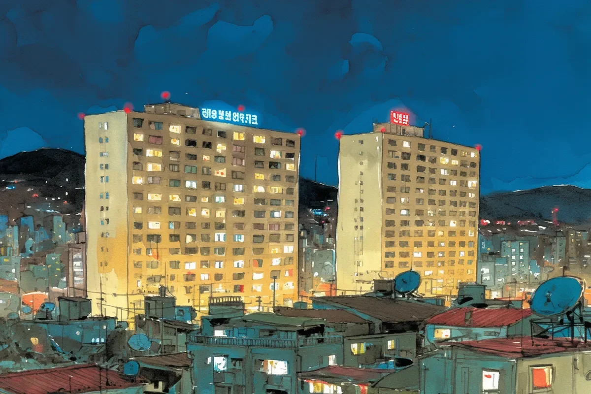

길 건너 국숫집 간판이 거의 망가져 가고 있다. 마치 월급도 못 받는 조명 인턴처럼, 병든 초록빛을 깜박이며 내 스프레드시트를 비춘다. 저편의 아파트는 타인의 문제들을 실시간으로 보여주는 라이브 피드 같다. 한 창문에서는 파란 TV 불빛이 보이는데, 누군가 베이킹 쇼에 과몰입하고 있는 게 분명하다. 다른 창문에서는 한 남자가 안절부절못하며 서성인다. 분명히 방금 와이파이 요금 고지서를 봤을 것이다. 우리는 모두 각자의 작은 상자 안에 홀로 있지만, 적어도 나는 이걸로 야근 수당이라도 받는다.
[The noodle shop sign across the street is on its last legs. It’s like an unpaid intern of a lamp, flickering a sickly green light onto my spreadsheets. Across the way, the apartment building is a live feed of other people's problems. I can see a blue TV glow in one window, where someone is probably getting way too invested in a baking show. In another, a guy is pacing back and forth. He definitely just saw his Wi-Fi bill. We’re all alone in our little boxes, but at least I’m getting paid overtime for it.]
나는 옥상에 올라와 거창한 생각을 하는 것을 좋아한다. 도시의 소음은 웅웅거림으로 잦아들고, 공기에서는 마늘빵과 막연한 불안의 냄새가 난다. 나는 불빛들을 멍하니 바라보며 우주에 대해 고찰하곤 하는데, 그동안 내 옆의 녹슨 위성 안테나는 아마 누가 쓰레기를 버릴 차례인지 다투는 소리나 수신하고 있을 것이다. 막 심오한 감상에 젖어들던 찰나, 비둘기 한 마리가 난간에 내려앉았다. 녀석은 내가 돈이라도 빚진 사람처럼 쳐다보더니 내 소매의 실밥을 훔치려다, 그 순간을 완전히 망쳐버렸다.
[I like to come up to the roof to think big thoughts. The city’s noise fades to a hum, and the air smells like garlic bread and vague anxiety. I’ll stare out at the lights and wonder about the universe, while the rusty satellite dish next to me probably just picks up a fight over whose turn it is to take out the trash. Just as I was feeling profound, a pigeon landed on the ledge. It looked at me like I owed it money, tried to steal a thread from my sleeve, and completely ruined the moment.]
애들이 드디어 잠들었다. 우리의 휴전은 마지막으로 건넨 결정적인 물 한 잔으로 성사되었다. 이제 이 축복받은 고요 속에서, 내가 제일 좋아하는 심야 쇼를 볼 수 있다. 바로 길 건너편 아파트 건물들이다. 거실을 느릿느릿 점령하려는 음모를 꾸미는 식물들을 키우는 '고사리 아줌마'가 있고, 사흘 내내 똑같은 회색 운동복 바지를 입고 있는 '서성이는 남자'도 있다. 그의 작은 독재자도 우리 집 독재자만큼이나 까다로울지 궁금하다. 우리 모두 각자의 작고 혼란스러운 왕국의 사령관이라는 사실을 아는 건 꽤 괜찮은 기분이다.
[The kids are finally asleep. Our ceasefire was brokered by one last, critical glass of water. Now, in the blessed quiet, I can watch my favorite nightly show: the apartment blocks across the street. There’s Fern Lady, whose plants are plotting a slow-motion takeover of her living room. And there’s Pacing Guy, who has been wearing the same grey sweatpants for three days straight. I wonder if his tiny dictator is as demanding as mine. It’s nice to know we’re all commanders of our own little chaotic kingdoms.]
버스 정류장 유리는 때가 껴서 거의 예술 작품 수준이다. 나는 평범한 일상들로 가득 찬 거대한 강림절 달력 같은 저 아파트 건물을 보며 시간을 보낸다. 5층에서 팔을 흔드는 저 사람이 보이는가? 분명 방금 TV 리모컨을 잃어버렸을 거다. 내 버스비를 전부 걸 수 있다. 그 아래 창가의 슬프고 앙상한 식물의 이름은 허버트인데, 선한 의지가 낳은 결과물이다. 불 켜진 창문 하나하나는 사소한 짜증과 신발을 벗는 단순한 기쁨으로 가득 찬 하나의 온전한 삶이다. 마침내 버스가 커다랗고 시끄러운 영웅처럼 연석으로 쿵쾅거리며 다가와 내 생각들로부터 나를 구해준다.
[The bus shelter glass is a masterpiece of grime. I pass the time by watching the apartment building, which is like a giant advent calendar of normal life. See that person on the fifth floor waving their arms? They definitely just lost the TV remote. I'd bet my bus fare on it. The sad, skeletal plant in the window below is named Herbert, and he’s a testament to good intentions. Each lit window is a whole life full of little annoyances and the simple joy of taking your shoes off. The bus finally rumbles up to the curb, a big, noisy hero arriving to save me from my own thoughts.]